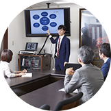

① プロジェクトチームメンバー
新しい教育サービスの開発や新規事業の立ち上げ、教材の開発などにチームメンバーとして関わります。3～6名程度の少人数チームで仕事を進めていくため、若手でも自分の意見を企画に反映させることができ、時には直接社長へプレゼンすることもあります。


ワオ・コーポレーションは創業以来、
教育への想いは変わることなく、
常に新たな価値を探求してきた。
未来を創造するために、
これからも挑戦は続く。
私たちと共に歩み続ける、
向上心と好奇心あふれるキミと出会いたい。
さあ、学びの旅に出よう。
個性と想い、そして夢をバッグに詰めて。
「学び」を変える、旅に出よう。


築けるキャリア
総合職とシステム開発職のいずれも、
チームメンバーからチームリーダー
そして部署責任者というキャリアステップを辿ります。
少数精鋭のチームで仕事を進め、
新入社員であっても、
意欲と能力のある方には
どんどん仕事を任せていくという環境です。
新しい教育サービスの開発や新規事業の立ち上げ、教材の開発などにチームメンバーとして関わります。3～6名程度の少人数チームで仕事を進めていくため、若手でも自分の意見を企画に反映させることができ、時には直接社長へプレゼンすることもあります。

リーダーとしてプロジェクトを進めながら部下のマネジメントを行います。
既存の部署のリーダーになることもあれば、新規事業（チーム）の立ち上げを任されることもあります。
複数のプロジェクトチームを取りまとめる責任者となります。
自部署のマネジメントの他、他部署との連携が必要な場合は先頭に立って指揮を執ります。
社内全体で利用する基幹システムやオンライン学習教材のシステムの企画・開発にチームメンバーとして携わります。
リーダーとしてプロジェクトを進めながら部下のマネジメントを行います。
並行して進行させている複数のプロジェクトに対して、工程管理の責任を負います。
複数のプロジェクトチームを取りまとめる責任者となります。
自部署のマネジメントの他、他部署との連携が必要な場合は先頭に立って指揮を執ります。